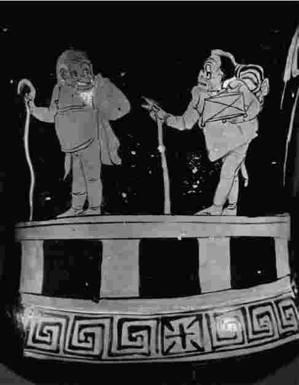

有人指责亚里士多德对于良善生活的理解是一种狭隘的知识观：似乎荷马、菲迪亚斯 [1] 、伦布兰特 [2] 和巴赫不会被视为成功的典范或eudaimonia的例证。这样的指责很可能是不公正的；因为《伦理学》中所提出的“沉思”理念是个很大的概念——大得也许足以包含一个艺术天才或文学天才的生活。尽管如此，亚里士多德实际上很羡慕这样的天才：在他幸存的艺术论著中，每一页都洋溢着这种羡慕之情。
《诗学》很短，而且只有一半幸存下来。它含有一篇论述语言和语言学的论文，《修辞学》第三卷中对文体风格的论述可看做对该论文的补充。《诗学》也论及情感问题，而在《修辞学》第二卷里亚里士多德对之作了详尽而细致地讨论。但《诗学》的主要内容是评论家们所认为的文学理论或文学评论——尤其是关于悲剧的理论和评论。但那不是亚里士多德对其作品的确切看法；因为《诗学》是对“生产性”科学的一个贡献。换言之，《诗学》的主要目的不是告诉我们如何评判一件艺术作品，而是如何生产出一件艺术作品。

图21这是一个希腊花瓶上的彩绘，展现的是一个主人和一个仆人出门旅行的戏剧场景。
亚里士多德认为，所有艺术都是表现或“模仿”的问题。“史诗、悲剧诗歌、喜剧、祭酒神赞歌以及大多数长笛和竖琴音乐，总体上都是模仿。”艺术模仿或表现人类的生活，尤其表现人类的行为。人的行为在特征上各有不同，“正是这方面的差异才将悲剧和喜剧区分开来；因为喜剧被认为是模仿那些境况比当今的人更糟糕的人，悲剧则模仿那些境况比当今的人更好的人”。《诗学》大部分内容都致力于对悲剧的阐述。讨论是由一个定义展开的。“悲剧是对严肃而完整的、并有重大意义的行为进行的一种模仿。其语言得到很好的趣味加工，不同的部分使用不同的加工方式。它是以戏剧而不是叙述的形式展开的。它通过同情和恐惧达到一种情感的净化。”
在亚里士多德后来所区分的悲剧六要素，即情节、人物、语言、思想、表演场景、歌曲中，情节是最重要的：正是借助于情节悲剧才是“完整的”或者是统一的；也正是通过情节，悲剧才会实现它的净化功能。尤其是，“悲剧影响情感的主要手段就是情节的某些部分，即发现和逆转”。情节围绕着一个中心人物，也就是后来所说的“悲剧英雄”而展开，他必须是这样一个人，“在优点和美德上并不是十分突出，也不是因为自己的恶劣和恶行，而是由于某些阴差阳错陷入不幸——是个有很高声誉和很好运气的人，就像俄狄浦斯或梯厄斯忒斯，或者出身这类家庭的名人”。悲剧的主角享有极大的成功（比如俄狄浦斯就成为底比斯国王）。他也犯下某种“错误”（俄狄浦斯不知情地杀死了父亲，并娶了母亲为妻）。这个错误被发现了，于是发生了“逆转”（俄狄浦斯的母亲自杀，他自己则自刺双目，遭到放逐而离开底比斯）。通过有机的统一和暗含的普遍性，这个悲剧故事对观众的感情产生影响。
亚里士多德的悲剧观点对后来的欧洲戏剧史产生过深远的影响，但目光却存在局限。他对悲剧的定义很难适用于莎士比亚的悲剧，更别说现代剧作家的作品了——现代作品的主角或非正统主角既没有俄狄浦斯那样的社会地位，也没有他那样的辉煌历史。不过，亚里士多德并非想提出一个永远都正确的悲剧理论。他只是在告诉那些在希腊的舞台传统下工作的同代人，如何写一个剧本。（他的建议建立在对希腊戏剧史进行的大量经验研究之上。）此外，亚里士多德对悲剧的目标的理解也很古怪：悲剧永远或作为一个规则要净化观众的同情和恐惧吗？如果是这样，是否就可以认为这种情感净化是悲剧的首要功能呢？（说到这一点的话，为何要假设悲剧有任何功能呢？）不管怎样，如果悲剧有情感的一面，也就有审美和理性的一面。
亚里士多德没有在他的悲剧定义里突出这些方面，但他是知道的。事实上，《诗学》的很多内容都隐约地讨论了审美的问题，因为他讨论了“经过趣味加工的语言”和悲剧所要求的节奏。关于艺术的理性方面，亚里士多德是这样说的：
学习的乐趣是生产性学科的一个重要因素。沉思或认识的完成是eudaimonia的首要组成部分，eudaimonia则是实践学科的目标。真理和知识是理论学科的直接目标。对知识的渴望——亚里士多德认为这是每个人本性的一部分，也是他自己个性的主要方面——影响着亚里士多德哲学的三大组成部分，并使之成为一体。